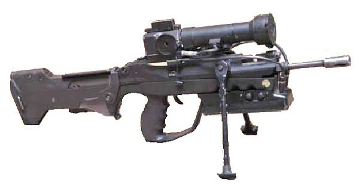

Famas
The FAMAS (French: Fusil d'Assaut de la Manufacture d'Armes de Saint-Étienne or "Assault rifle of the Saint-Étienne weapon factory") is a bullpup-styled assault rifle designed and manufactured in France by MAS located in Saint-Étienne, which is now a member of the French government-owned Nexter group. It is the service rifle of the French military.
- Range: 350 metres
- 19.2" barrell
- Capacity: 25 rounds